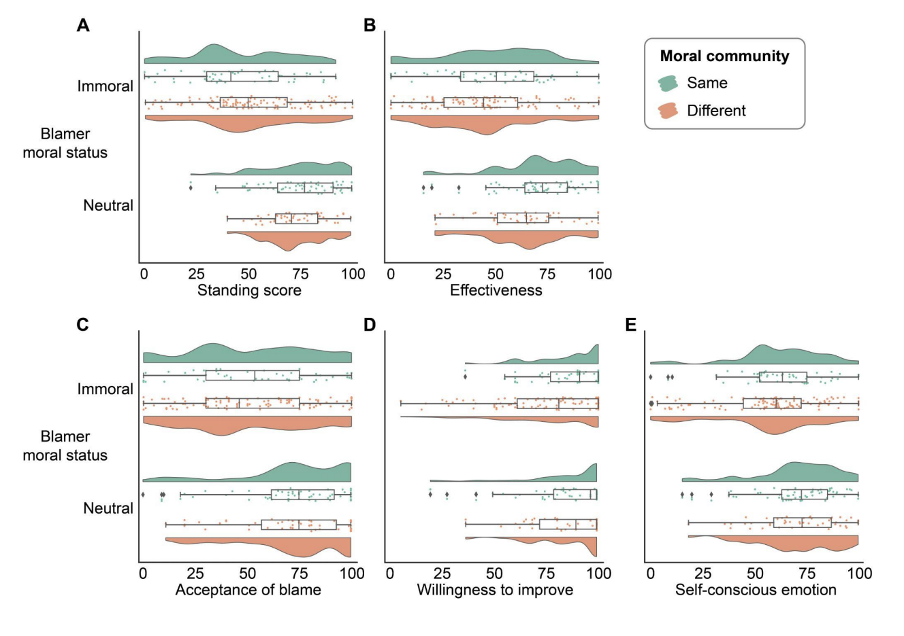
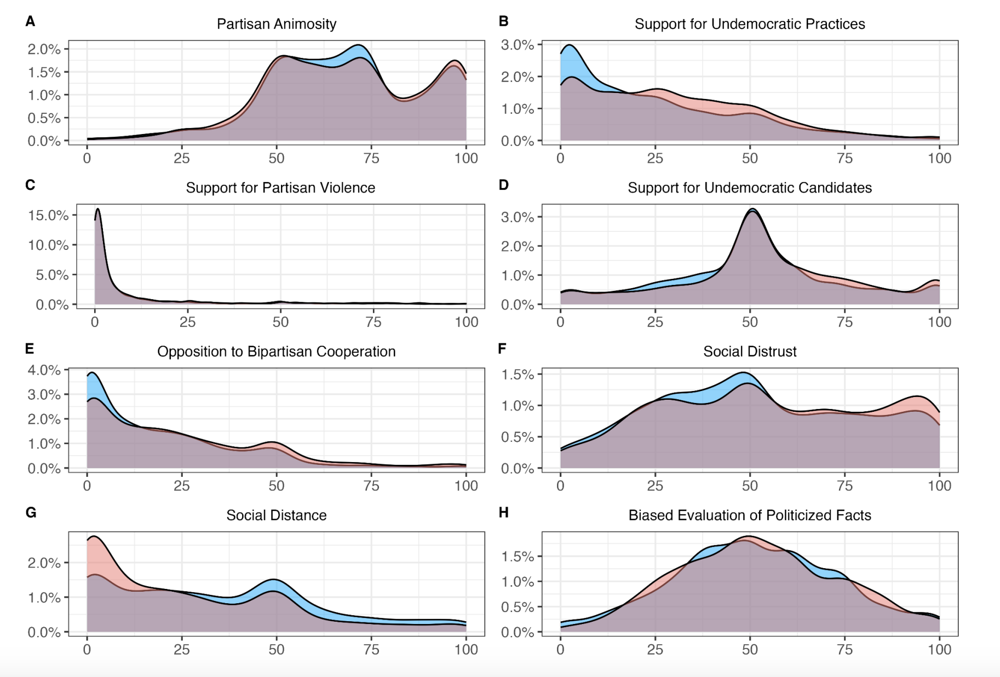
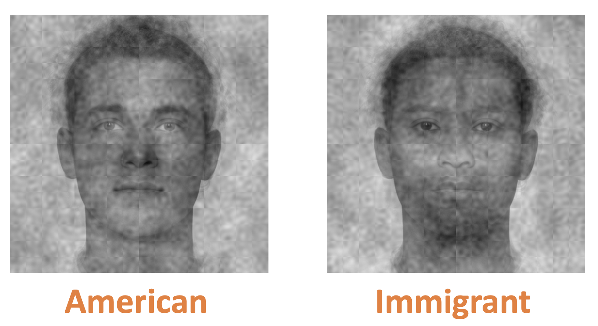
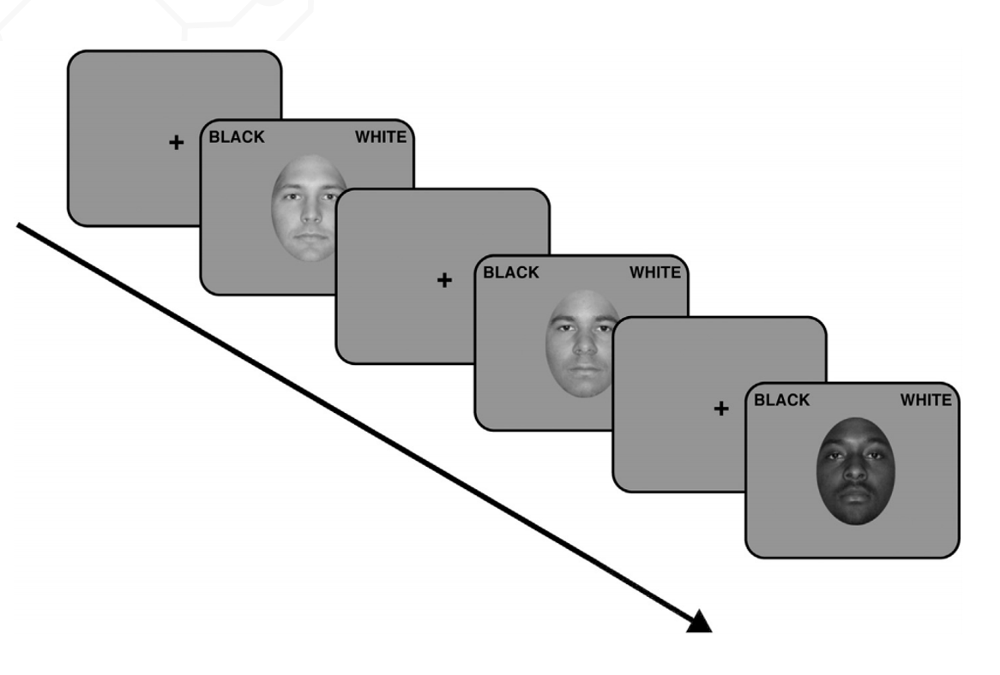
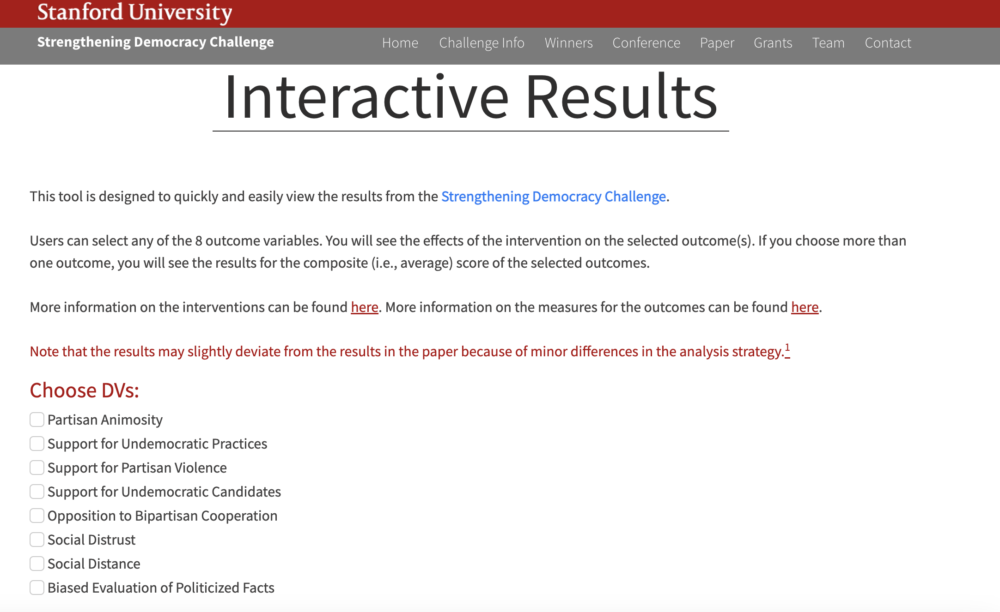

Academic Work
My research interests lie at the intersection of intergroup cognition, moral psychology, and political psychology. I am particularly focused on the formation of moral and political beliefs and behavior, with an emphasis on how group motivations may influence these processes. To investigate these topics, I use methods from social psychology, cognitive science, and computational social science.
Preprints

Ghezae, I., & Yu, H. Folk intuitions of moral standing to blame. Available at SSRN 4109940. Online.

Voelkel, J. G.*, Stagnaro, M. N.*, Chu, J.*, Pink, S. L., Mernyk, J. S., Redekopp, C., Ghezae, I., Cashman, M., Strengthening Democracy Challenge Finalists, Druckman, J., Rand, D. G., & Willer, R. Megastudy identifying effective interventions to strengthen Americans’ democratic attitudes. Online.
Ghezae, I., Conroy-Beam, D., & Pietraszewski, D. (in prep). Modeling the social and cognitive processes necessary to produce perceptions of race.
Open-Source Software
Ghezae, I. (2023). Unique Turker 2. [Full-stack Flask app with a built-in database that can be used by Mechanical Turk requesters to prevent duplicate HIT access from Mechanical Turk workers]
Science Communication
Ghezae, I. (2020, October 1). The Social Media Outrage Machine: How Our Digital Worlds Distort Political Discourse and Why This Matters. Santa Barbara Independent.
Other Projects
Some other projects that I’ve led:

How collective existential threat is implicated in the mental representations of immigrants. Brief overview. Talk.

The role of phenotypic prototypicality in updating group representations. Brief overview.

Jan Voelkel and I developed a Shiny web app for people to easily view the main results of the Strengthening Democracy Challenge. Check it out here.